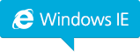
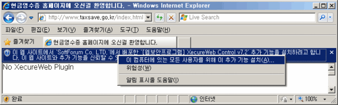
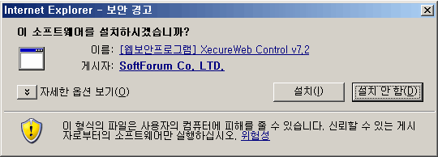
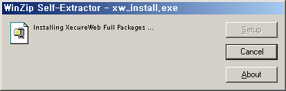
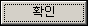
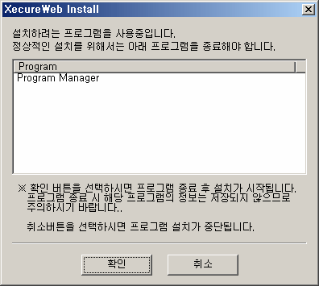

웹 보안 프로그램 설치 안내
고객님의 소중한 정보 보호를 위해 암호화 프로그램을 설치/확인하고 있습니다.
- 고객님의 컴퓨터 성능에 따라 10초~1분정도 소요될 수 있습니다.
-
암호화 프로그램('Softforum Co.,Ltd.'에서 배포한 'XecureWeb Control')의 설치여부를
묻는 '보안경고' 창이 나타나면 반드시 '설치'를 선택하신 후 설치해 주시기 바랍니다.
-
보안프로그램 설치 후 브라우저를 다시 시작해 주십시요.
㈜보안프로그램 다운로드 화면에서 설치화면으로 넘어가지 않을 경우에는 브라우저 설정을 확인하시기 바랍니다.
-
화면이 멈춘 경우 'Ctrl + F5'를 3~5회 정도 눌러 주십시요.
계속 진행이 되지 않는 경우에는 수동설치를 클릭해 주시기 바랍니다.

STEP 01.
본인인증 페이지 접속시 아래의 화면과 같이 'XecureWeb Control' 설치 바가 나타나면, 바를 클릭하여 '이 컴퓨터에
있는 모든 사용자를 위해 이 추가 기능 설치(A)..'를 선택합니다.
키보드 접근 방법(인터넷 익스플로러에서만 적용)
- Alt + N 단축키를 누르면 Active X를 실행시킬 수 있도록 포커스가 이동 됩니다.
- 포커스 이동후 스페이스바를 누른 후 Active X Control 설치(이 컴퓨터에 있는 모든 사용자를 위해 이추가 기능 설치) 메뉴를 방향키로 선택하여 설치하시기 바랍니다.

STEP 02.
'보안경고' 화면에서
버튼을 누릅니다.

STEP 03.
아래의 화면과 같이 설치 과정이 진행됩니다.

STEP 04.
STEP 05.
설치 과정 진행중 아래와 같이 다른 프로그램이 사용중이라는 메시지가 나오면,
 버튼을 눌러 해당
프로그램을 종료시키거나, 종료가 원활하지 않을 경우 취소를 눌러 설치를 중단하고, PC를 재부팅하고 홈페이지에 재접속합니다.
